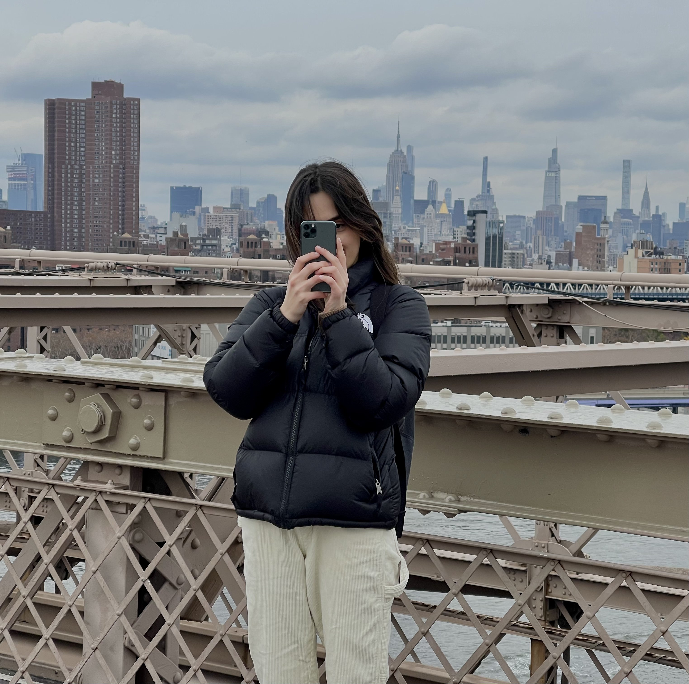

This is a website where I share my photography. I realy enjoy taking photos during my daily walks or my trips. I take a lot of urban photos, especially when I go on trips. I also like taking photos of the sky since it is always so different, no matter where I am and no matter how my environment is, sky is always exciting and different. All of the photographs on this website were taken with my Iphone, thus they might not be the best quality. However, I enjoy the challenge of taking good photos with my phone instead of a fancy camera. It seems more natural and comfortable to me.
I am happy to see you here and hope you will enjoy looking through some of the photographs I took. There are two main categories, Urban and Sky photography. If you want to learn more about me and my UX related work, you can check my portfolio website. Feel free to reach out to me if you have questions about any of these photographs. You can find my contact information below. Please do not use any photoes without reaching our to me or citing me as the owner.
